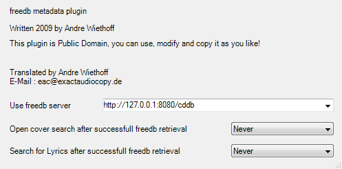
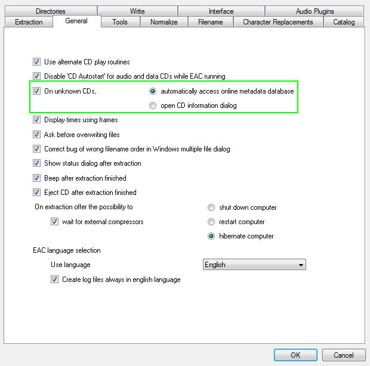

You must have the "freedb Metadata Plugin" installed to use the proxy with Exact Audio Copy, the built in freedb will not work.
To install this, check the box next to it during installation.
Once you have confirmed the "freedb Metadata Plugin" is installed, access the metadata options through the "EAC → Metadata Options" menu.
In the "Metadata Provider" tab, select "freedb Metadata Plugin" from the provider list.
Click "Show options of the selected metadata provider".
Put the server link in the "Use freedb server" text box.
Close the window and click "OK".
To make it so CDs automatically get tagged using the freedb server, access the EAC options through the "EAC → EAC Options" menu.
In the "General" tab, check "On unknown CDs," and select the "automatically access online metadata databse" option.
Setup is complete, insert a CD to test!